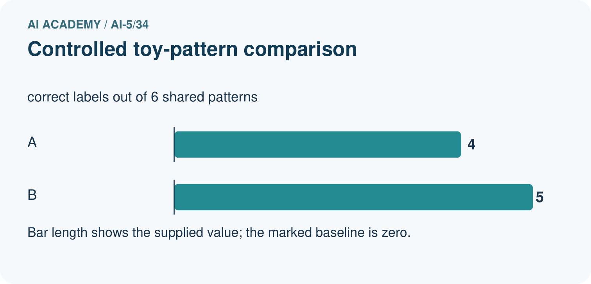
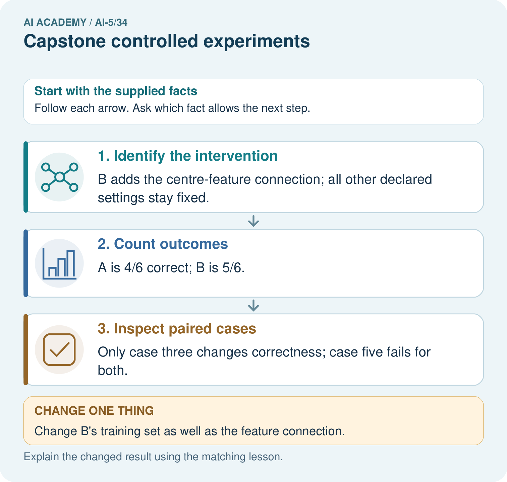

AI Academy · Level 5 · Grade 10 · Week 34 · Teacher guide
Capstone controlled experiments
Learn to understand, design, build, test and explain AI systems responsibly.
Project: Image-pattern Network Investigation
Teacher guide · 1 of 8
Prepare the purpose, prerequisites and materials
Teach the learning cycle
Primary target: Trace matched two-update learning-rate experiments
| Session | Sequence and minutes | Resources |
|---|---|---|
| Session 1 · Understand · 45 min | 0–7: recall and prerequisite; 7–15: inspect the concrete case and predict; 15–30: teacher models the worked trace; 30–40: learners explain a step using the text and visual; 40–45: check the core idea. | Sections 1–6; record the brief recall in the workbook. |
| Session 2 · Practise · 45 min | 0–5: retrieve the procedure; 5–15: W2 completion practice; 15–23: explain and check with a partner; 23–30: each learner answers the misconception check; 30–40: targeted reteaching or a harder variation; 40–45: prepare the investigation. | Sections 7–10; use the matching workbook W2 and misconception check. |
| Session 3 · Investigate and transfer · 45 min | 0–5: retrieve the decision rule; 5–20: investigate or trace; 20–30: start the independent case; 30–38: connect the project; 38–43: act on feedback; 43–45: plan the return check. | Sections 9 and 11–14. Give extra time to finish the full task set; use Section 15 when the week includes a coding lab. |
This is a starting allocation of 135 minutes, not a validated duration. Preserve all named topics. Schedule extra time for connected examples, the full investigation, independent cases and project building. Repeated copies of a case share one recorded attempt; they are not new evidence.
Retrieval answer guidance
Capstone hypothesis and baseline
Without opening the old lesson, explain one key idea from Capstone hypothesis and baseline. Give an example and a mistake that the idea helps you avoid.
Look for: Write a testable capstone hypothesis and a credible baseline
Reference example, not the only acceptable wording: Teacher explanation: Predict max(0, a*x) without bias; baseline a = 1; candidate starts at 1, learning rate 0.1, two full-batch updates on T1/T2. Hypothesis: candidate validation MSE on V1/V2 is strictly below the baseline MSE.
Efficiency and resource measurement
Without opening the old lesson, explain one key idea from Efficiency and resource measurement. Give an example and a mistake that the idea helps you avoid.
Look for: Calculate throughput and amortised time per example from repeated timings
Reference example, not the only acceptable wording: Teacher explanation: A: 2.0 seconds, 20 ms per example, 50 examples per second. B: 1.2 seconds, 12 ms per example, about 83.33 examples per second. The boundary covers 100 completed sequential predictions on preprocessed inputs, excluding loading and preprocessing. It does not establish worst-case or percentile request latency.
Transfer learning
Without opening the old lesson, explain one key idea from Transfer learning. Give an example and a mistake that the idea helps you avoid.
Look for: Trace a reused feature extractor and a newly fitted output head
Reference example, not the only acceptable wording: Teacher explanation: The extractor gives h = 6 and the head predicts 1. Weights [1, 1] and bias 0 stay frozen; only the threshold is fitted. h is a nonnegative sum of counts, with no probability mapping or calibration.
Use two 45-minute sessions. This capstone uses constructed scalar ReLU regression so every calculation is inspectable. It is an experiment in training and evidence, not a real-world deployment. Preserve written plans, data roles and raw predictions. Optional local Python requires no external packages or AI account. Do not expose independent-task solutions before collecting work.
Outcomes
Trace matched two-update learning-rate experiments
Select a candidate using a prespecified validation rule
Explain the limits of a one-factor comparison
Preparation
Printed lesson and workbook; paper and pencil
Calculator; optional local Python 3 interpreter
Fictional data only; reserve the independent task and fresh retry until assessment
Prerequisite answer
Data and splits, initial parameters, architecture, loss, update count and evaluation procedure must stay fixed; change only the intended learning rate.
End goal for the pictorial case
Explain capstone controlled experiments with a traceable toy-network case and a bounded conclusion.
This added worked case illustrates the week’s main idea. Retain all original and connected topics; schedule its practice within the teaching cycle.
Teacher guide · 2 of 8
Explain and model the mechanism
Continue with training (1,2) and (2,4), validation (3,6) and (4,8), and prediction max(0, a*x). Compare learning rates 0.1 and 0.2. Each run starts at a = 1, has no bias and takes two full-batch updates. Keep the loss, data order and arithmetic fixed. This toy model has no randomness; repeating the exact run checks replay, not variation across seeds.
Record the comparison as an explicit revision to the one-candidate Week 33 plan before viewing new results. Validation may guide selection; sealed final data must not. Select lower validation MSE, with a tie going to learning rate 0.1.
For positive weights and these positive inputs, the ReLU is active. Training MSE is ((a-2)^2 + (2*a-4)^2)/2 = 2.5*(a-2)^2. Its gradient is 5*(a-2). Update a to a - rate*5*(a-2). At rate 0.1, weights are 1.5 then 1.75. At rate 0.2, weights are 2 then 2. The formula assumes the active region; do not extend it blindly to nonpositive weights.
| Term | Meaning |
|---|---|
| Controlled comparison | A comparison holding specified conditions constant while changing an intended factor |
| Full batch | An update whose gradient uses all training rows |
| Selection rule | A rule for choosing a candidate using development evidence |
| Confounder | A differing condition that prevents isolating the intended explanation |
Keep the evidence roles separate
Guided: 2.5 - 0.3*2.5 = 1.75; validation MSE 0.78125. Equal final weights here give equal final predictions, but the intermediate weights differ. Exit: the score compares complete procedures with different budgets, not an isolated learning-rate effect; match update counts and all other settings.
Model the reasoning aloud
Use the complete worked example below before asking learners to complete W2. Reveal a small part, invite a prediction, then explain the deciding step. These teacher notes contain solutions; do not reveal the independent case answer during modelling.
At a = 1.75, validation predictions are 5.25 and 7. Errors -0.75 and -1 square to 0.5625 and 1, giving MSE 0.78125. At a = 2 the predictions equal 6 and 8, so MSE is zero. Rate 0.2 wins the written validation rule. This selection uses two validation cases, not four independent cases because two runs used them.
If one run used extra epochs or different training rows, the comparison would mix factors. Either rerun a matched experiment or report the differences and avoid claiming an isolated learning-rate effect. A zero validation score is also compatible with a very simple task and says nothing about a new distribution.
| Thinking move | Teacher prompt |
|---|---|
| Plan | What is given? What is the question? Which procedure fits these facts? |
| Do | Point to each input and intermediate step in the worked trace. Name the rule that allows the next step. |
| Check | Does the output answer the question? Which assumption or limitation prevents a larger claim? |
Use the diagram and verbal explanation together. Ask learners to match a sentence to a specific visual step; do not assign learners fixed visual or auditory learning styles.
A pictorial worked case: Capstone controlled experiments
One controlled network change. The capstone compares two fixed networks on the same six labelled toy patterns. Only one feature connection is added.
The facts we will use
A scores [1,1,0,1,0,1]; B scores [1,1,1,1,0,1]. Settings, labels and scoring remain fixed. Binary entries mean 1=correct and 0=incorrect.


Read the picture one step at a time
Why this result follows
Controlled experiments vary the specified component while retaining comparable cases. Pairing the outcomes by pattern shows where the score difference comes from instead of hiding it in an overall average.
What this example does not establish
These descriptive toy results do not establish significance, stable superiority or the full learned mechanism.
Change one thing in the pictured case
Change: Change B’s training set as well as the feature connection.
Prediction: The experiment no longer isolates the connection change.
Reason: A training-data difference supplies an alternative explanation for the observed result.
Ask while showing the picture
Cover the result. Ask learners to name the inputs and predict the next step. Uncover one step, connect the icon to the actual procedure, and explain its evidence. Then change the supplied condition and compare. The picture is a representation; it does not document execution of a real AI model.
Teacher guide · 3 of 8
Demonstrate and guide practice
| Time or stage | Teacher action |
|---|---|
| Session 1 start to 7 minutes | Retrieve the prerequisite and ask students to explain the data roles. |
| 7 to 18 minutes | Read section 1 and complete W1 with a recorded reason. |
| 18 to 32 minutes | Trace section 2 and complete W2; compare raw values before conclusions. |
| 32 to 45 minutes | Explain the diagram and complete W3 in pairs; record any support. |
| Session 2 start to 8 minutes | Complete the guided response and discuss why the evidence has limits. |
| 8 to 20 minutes | Read the remaining explanation and prepare a concise experiment record. |
| 20 to 35 minutes | Collect W4 independently. Require calculations and a bounded claim. |
| 35 to 45 minutes | Use W5 and the exit response for feedback. Administer the fresh retry after feedback without the earlier solution. |
Use the worked example in Sections 3 and 6. Collect a prediction before revealing its result; ask the learner to point to each intermediate fact.
Provide a frame with question, fixed settings, changed setting, data roles, raw predictions, metric, conclusion and limitation. Allow a calculator and explicit squared-error columns. Extension: implement the arithmetic locally, preserve the program version, and explain why a successful replay adds no independent test cases.
Reduce help deliberately
Completion task: Compute both updates for rates 0.1 and 0.2 using gradient 5*(a-2).
Teacher check: Teacher explanation: Rate 0.1: 1 -> 1.5 -> 1.75. Rate 0.2: 1 -> 2 -> 2. Gradients are -5 then -2.5 for the first run and -5 then 0 for the second.
Start by identifying the given inputs together. Leave the intermediate steps blank. If needed, model one step, then withdraw that help on the next step. Move to a full trace only when the partial trace is understood. For partners, alternate explainer and checker; collect a response from every learner before discussion.
Individual reasoning check
Use the worked case for Capstone controlled experiments. Proposed explanation: “More runs mean more validation examples”. Decide whether this explanation is supported. Point to the step or supplied fact that decides; explain your repair if needed.
Expected correction: Reusing two rows across runs leaves two distinct validation cases.
Collect explanations, not only yes/no votes. If a misunderstanding is common, re-model the relevant step for the class. If it affects a few learners, give a short targeted group explanation while others solve a more demanding variation.
Pictorial practice question
Compute the two correct counts and identify the changed case. Why would changing B’s training data weaken the conclusion about its added connection?
Reasoned teacher answer
A has four correct, B five; case three explains the count gain and case five fails for both. Changing training data alongside the connection entangles two interventions, so the gain cannot be attributed to the connection alone.
Changed-case reasoning: The experiment no longer isolates the connection change. A training-data difference supplies an alternative explanation for the observed result.
Collect each learner’s explanation before discussion. Use the first missing connection between input, deciding step and result to choose support. This question is worked-case practice, not fresh mastery evidence.
Teacher guide · 4 of 8
Run the investigation and diagnose misconceptions
More runs mean more validation examples: Reusing two rows across runs leaves two distinct validation cases.
The largest rate must be best: The active-region update may overshoot; results depend on task, rate and budget.
Zero validation error proves the final result: Final rows remain unopened and the selected candidate has not yet been evaluated on them.
Use Section 9 for the evidence ledger. Add a boundary or missing-input case and record the expected response before checking. More successful repeats of one case do not establish wider coverage.
Match the support to the first error
| What the response shows | Next teaching action |
|---|---|
| Missing or misread facts | Read the case aloud, mark supplied versus unknown facts, and let the learner restate it. |
| Wrong procedure | Return to the deciding step in the worked case. Contrast it with the proposed incorrect explanation. |
| Arithmetic or implementation error | Trace intermediate values or lines; preserve the first mismatch and retry that step. |
| Correct result without a reason | Ask for a trace and a changed case before marking independent understanding. |
| An unsupported wider claim | Ask which supplied evidence supports the claim and which further observation would be needed. |
Offer an oral explanation, drawing, enlarged visual or fewer examples when that removes a reading/writing barrier. Keep the same reasoning goal. Stretch secure learners by changing a boundary or assumption and asking them to defend the effect, not simply by assigning more of the same questions.
Teacher guide · 5 of 8
Assess and explain the answers
Guided and exit questions
Guided: 2.5 - 0.3*2.5 = 1.75; validation MSE 0.78125. Equal final weights here give equal final predictions, but the intermediate weights differ. Exit: the score compares complete procedures with different budgets, not an isolated learning-rate effect; match update counts and all other settings.
W1 Name the controls
List six settings held fixed and the single intended changed factor.
Teacher explanation: Hold training and validation rows, initial a, architecture/bias policy, loss, update count and evaluation metric fixed. Change learning rate.
W2 Trace both runs
Compute both updates for rates 0.1 and 0.2 using gradient 5*(a-2).
Teacher explanation: Rate 0.1: 1 -> 1.5 -> 1.75. Rate 0.2: 1 -> 2 -> 2. Gradients are -5 then -2.5 for the first run and -5 then 0 for the second.
W3 Select without extra evidence
Recompute validation MSE for the final weights and apply the written selection rule. How many distinct validation rows were used?
Teacher explanation: MSE 0.78125 for a = 1.75 and 0 for a = 2, so select rate 0.2. There are two distinct validation rows; re-evaluation does not add cases.
W4 Run a new comparison independently
For training (1,3),(2,6) and validation (3,9),(4,12), start a = 1. Compare rates 0.1 and 0.2 for two updates. Gradient is 5*(a-3). Compute final weights and validation MSE, then select lower MSE; ties go to 0.1.
Teacher explanation: Rate 0.1: gradients -10,-5; weights 2,2.5. Validation errors -1.5,-2 give MSE 3.125. Rate 0.2: weights 3,3, errors 0,0 and MSE 0. Select 0.2, with only validation evidence on two constructed rows.
W5 Audit a mixed comparison
Run A uses rate 0.1 for two updates; run B uses rate 0.2 for six updates and different training rows. Can the difference be attributed to rate alone? Propose a repair.
Teacher explanation: No: update count and training data also differ. Rerun both rates with the same initial parameters, architecture, rows, loss, two-update budget and evaluation procedure; preserve and label the earlier mixed comparison.
Independent assessment and fresh retry
W4 requires weights 2.5 and 3, MSE 3.125 and 0, selection 0.2 and a validation-only conclusion. Fresh retry: targets are 4*x on the same inputs, gradient 5*(a-4). Final weights are 3.25 and 4; validation MSE 7.03125 and 0. Require the same data-role limit.
Assess independent transfer
Selected case: For training (1,3),(2,6) and validation (3,9),(4,12), start a = 1. Compare rates 0.1 and 0.2 for two updates. Gradient is 5*(a-3). Compute final weights and validation MSE, then select lower MSE; ties go to 0.1.
Selected case answer
Teacher explanation: Rate 0.1: gradients -10,-5; weights 2,2.5. Validation errors -1.5,-2 give MSE 3.125. Rate 0.2: weights 3,3, errors 0,0 and MSE 0. Select 0.2, with only validation evidence on two constructed rows.
| Dimension | Evidence required |
|---|---|
| Explanation | Names the applicable idea or procedure and ties it to the supplied facts. |
| Trace and result | Preserves the given inputs and shows the relevant intermediate steps; distinguishes a prediction from an observed execution. |
| Limits | States the assumptions, missing evidence or conditions under which the result would change. |
Record each dimension as not yet, with support, or independent. Accept a valid alternative procedure with a defensible trace. Do not penalise an honestly recorded model failure if the learner correctly explains its evidence and limits.
Feedback that the learner uses
Name the earliest unsupported step and give one action to repair it. Have the learner make that repair now and explain why. Then assess the relevant skill on a fresh, fully specified case. Confirm it was not previously practised with feedback; solve and check the new case before assigning it. A follow-up design prompt is a starting brief, not automatically an equivalent test.
Teacher guide · 6 of 8
Connect the project, support and next lesson
For Image-pattern Network Investigation, use this week’s independent task as a rehearsal for the final evidence pack: For training (1,3),(2,6) and validation (3,9),(4,12), start a = 1. Compare rates 0.1 and 0.2 for two updates. Gradient is 5*(a-3). Compute final weights and validation MSE, then select lower MSE; ties go to 0.1. Keep actual observations separate from expected results, preserve failures, compare a baseline and explain the limits.
Provide a frame with question, fixed settings, changed setting, data roles, raw predictions, metric, conclusion and limitation. Allow a calculator and explicit squared-error columns. Extension: implement the arithmetic locally, preserve the program version, and explain why a successful replay adds no independent test cases.
Week 35 evaluates a frozen candidate and records limitations before considering revision.
Retain the project ledger and assess a changed case after support. Check the relevant prerequisite before carrying this component forward.
Plan the delayed return
Suggested return points in this level: ai-5/35. Use actual classroom dates, adjusting for holidays and gaps. One, three and six teaching weeks are scheduling choices, not a claimed optimal spacing.
At a delayed check, ask for the idea from memory and a changed application. Compare with the earlier independent response and record support used. For a new level, revisit the previous capstone before checking the new prerequisites.
| Record | Teacher evidence |
|---|---|
| Learner code and date | |
| Concept and case used; prior exposure | |
| Explanation / trace / limits | |
| Support and first repair | |
| Changed case and delayed outcome | |
| Next teaching action |
Use the evidence to choose reteaching or the next step. A completed page, confidence rating or attractive project does not by itself demonstrate understanding.
Project evidence from this case
For the Image-pattern Network Investigation, save the labelled trace and the changed-case explanation beside the experiment record. State exactly what this example supports before linking it to the wider capstone claim.
Teacher guide · 7 of 8
Prepare, teach and assess
Teaching target: Trace matched two-update learning-rate experiments
Prepare the labelled worked-case picture, the matching workbook, fictional input cards and a place for individual responses. Check a local Python 3 environment before class; have a paper-trace version ready.
| Session | Plan | Resources |
|---|---|---|
| Session 1 · Understand · 45 min | 0–7: recall and prerequisite; 7–15: inspect the concrete case and predict; 15–30: teacher models the worked trace; 30–40: learners explain a step using the text and visual; 40–45: check the core idea. | Sections 1–6; record the brief recall in the workbook. |
| Session 2 · Practise · 45 min | 0–5: retrieve the procedure; 5–15: W2 completion practice; 15–23: explain and check with a partner; 23–30: each learner answers the misconception check; 30–40: targeted reteaching or a harder variation; 40–45: prepare the investigation. | Sections 7–10; use the matching workbook W2 and misconception check. |
| Session 3 · Investigate and transfer · 45 min | 0–5: retrieve the decision rule; 5–20: investigate or trace; 20–30: start the independent case; 30–38: connect the project; 38–43: act on feedback; 43–45: plan the return check. | Sections 9 and 11–14. Give extra time to finish the full task set; use Section 15 when the week includes a coding lab. |
Before class, solve the supported practice: Compute both updates for rates 0.1 and 0.2 using gradient 5*(a-2).
Reasoned practice answer: Teacher explanation: Rate 0.1: 1 -> 1.5 -> 1.75. Rate 0.2: 1 -> 2 -> 2. Gradients are -5 then -2.5 for the first run and -5 then 0 for the second.
Check every learner before discussion: Use the worked case for Capstone controlled experiments. Proposed explanation: “More runs mean more validation examples”. Decide whether this explanation is supported. Point to the step or supplied fact that decides; explain your repair if needed.
Misconception repair: Reusing two rows across runs leaves two distinct validation cases.
Support: read the exact case aloud, enlarge the labelled picture, supply input cards and model only the first deciding step. Accept a spoken explanation or drawing; retain the reasoning goal.
Extension: Change B’s training set as well as the feature connection. Require a prediction and a reason before comparing. Expected result: The experiment no longer isolates the connection change. Reason: A training-data difference supplies an alternative explanation for the observed result.
Independent assessment: withhold the reserved answer until the learner has attempted the new case. Record support separately from correctness.
| Criterion | Not yet | With support | Independent |
|---|---|---|---|
| Explanation | Names an answer without a deciding fact | Uses a hint to link fact and decision | Explains the deciding fact in own words |
| Trace or test | Cannot connect input and result | Completes steps with prompts | Traces or tests a changed case accurately |
| Limits and revision | Claims more than evidence supports | Names a limit after a prompt | States a defensible limit and useful next test |
Project checkpoint: Present and defend. Demonstrate the system, explain one failure and justify the next improvement with evidence.
Use the weekly teacher answer for topic-specific reasoning. A saved progress tick is an activity record; judge mastery from the learner’s explanation and evidence.
Teacher guide · 8 of 8
Use feedback, labs and repair paths
Use the two formative questions as supported practice, not as independent mastery scores. Discuss the deciding evidence rather than accepting a guessed selection.
The feedback comes from the reviewed public worked case. Do not reveal the separately reserved independent teacher answer until the learner has attempted that case.
Ask students to predict before running code. Preserve errors and actual outputs; collect a changed test and an explanation. The branch-boundary and indexing lessons deliberately include failure cases.
Use the earlier worked-explanation links to address a specific missing building block, then return to the current question. Adapt this suggestion after observing the learner; it is not an automatic diagnosis.
Collect the completed-work portfolio as evidence. Record support separately from correctness, and assess explanation, trace/test and limitations. Progress ticks and quiz selections alone do not establish mastery.